XQTL2: A Complete Workflow for XQTL Analysis
XQTL2 Package
2026-03-11
XQTL2_workflow.RmdIntroduction
This vignette demonstrates a complete workflow for XQTL (Experimental Quantitative Trait Locus) analysis using the XQTL2 package. We’ll walk through the typical analysis steps from initial data exploration to detailed peak examination using example datasets from the ZINC Hanson experiment.
Loading the Package and Data
First, let’s load the XQTL2 package and the example datasets:
library(XQTL2.Xplore)
# Load example datasets
data(zinc_hanson_pseudoscan) # QTL scan results
data(zinc_hanson_means) # Founder frequency data
# Load reference data for genes and variants
data(dm6.ncbiRefSeq.genes) # Gene annotations
data(dm6.variants) # Variant data
# Display basic information about the datasets
cat("ZINC Hanson pseudoscan data dimensions:", dim(zinc_hanson_pseudoscan), "\n")
#> ZINC Hanson pseudoscan data dimensions: 25977 8
cat("ZINC Hanson means data dimensions:", dim(zinc_hanson_means), "\n")
#> ZINC Hanson means data dimensions: 3987264 6
cat("Available chromosomes:", unique(zinc_hanson_pseudoscan$chr), "\n")
#> Available chromosomes: chr2L chr2R chr3L chr3R chrXStep 1: Genome-wide Visualization
Manhattan Plots
The first step in any QTL analysis is to visualize the genome-wide association results. XQTL2 provides several Manhattan plot options:
# 5-panel Manhattan plot with physical distance (Mb) - useful for precise peak localization
XQTL_Manhattan_5panel(zinc_hanson_pseudoscan, cM = FALSE)
#> Warning: Removed 5210 rows containing missing values or values outside the scale range
#> (`geom_point()`).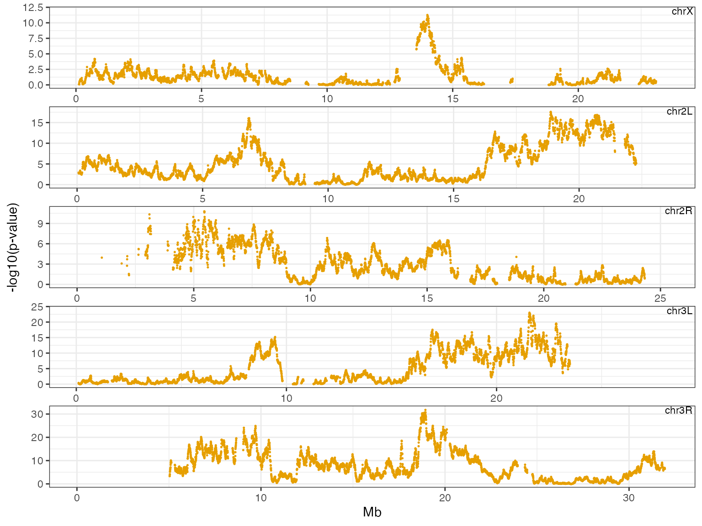
# 5-panel Manhattan plot with genetic distance (cM) - useful for broad peak identification
XQTL_Manhattan_5panel(zinc_hanson_pseudoscan, cM = TRUE)
#> Warning: Removed 5210 rows containing missing values or values outside the scale range
#> (`geom_point()`).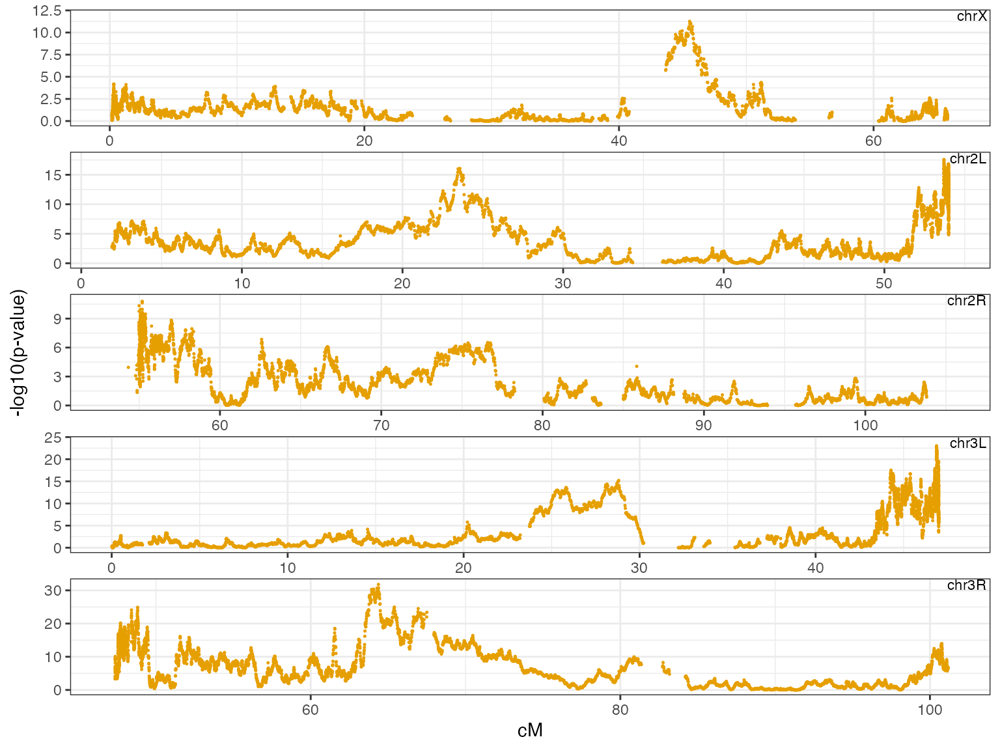
# Traditional Manhattan plot with physical distance
XQTL_Manhattan(zinc_hanson_pseudoscan, cM = FALSE, color_scheme = "UCI")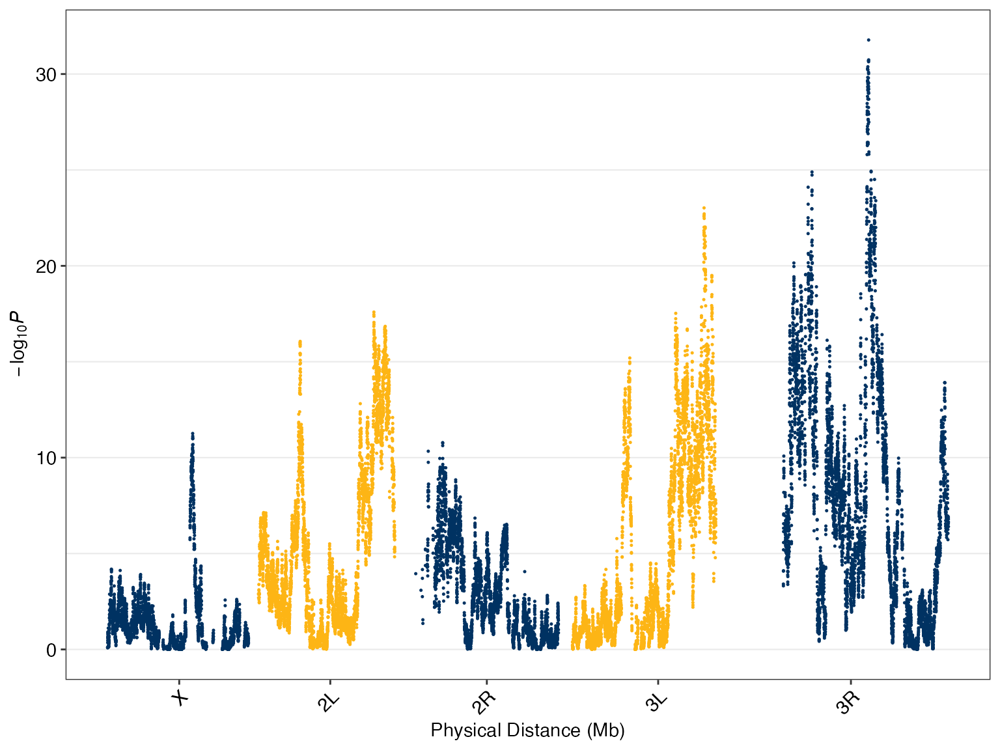
# Traditional Manhattan plot with genetic distance
XQTL_Manhattan(zinc_hanson_pseudoscan, cM = TRUE)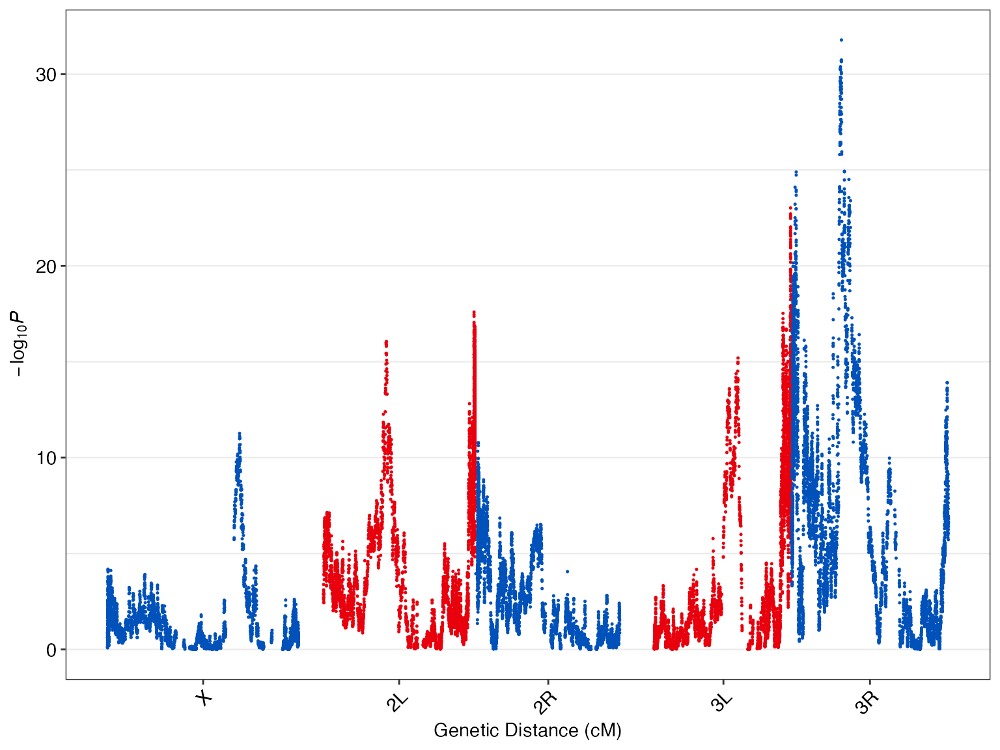
Note: The 5-panel Manhattan plots are particularly useful for high-quality datasets as they allow you to estimate peak locations within ~2Mb intervals. Genetic distance (cM) plots help identify broad peaks in centromeric regions that may not be actionable.
Step 2: Frequency Change Analysis
Once you’ve identified regions of interest, examine how allele frequencies change between treatment and control conditions:
# Basic frequency change analysis
XQTL_change_average(zinc_hanson_means, "chr3R", 18000000, 20000000)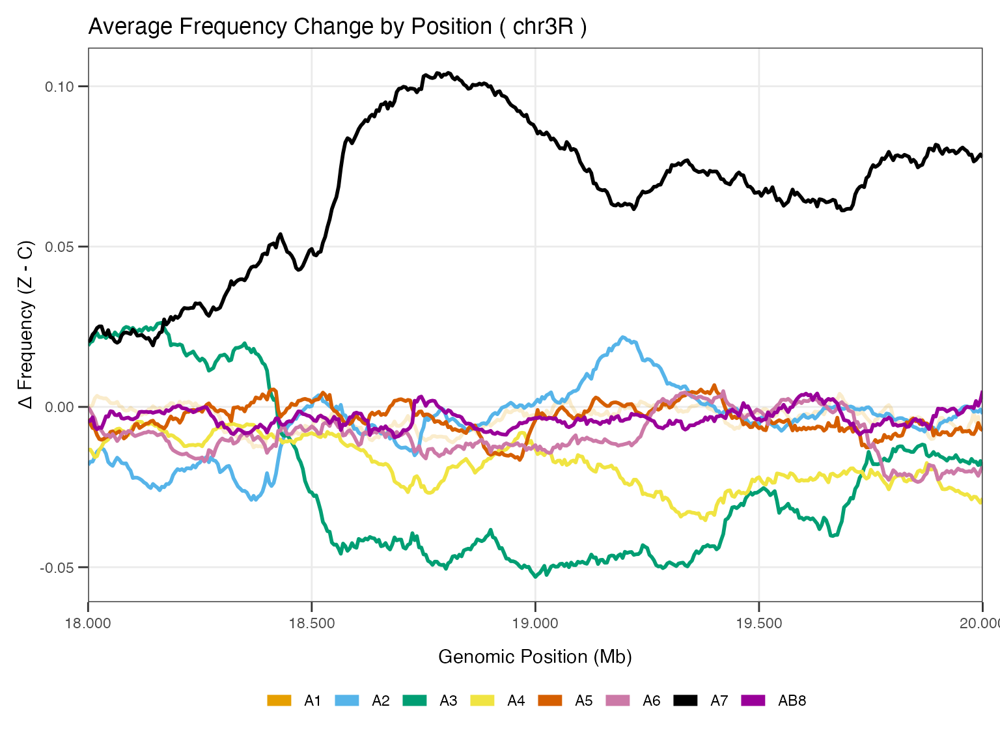
# Frequency change with reference strain highlighting
XQTL_change_average(zinc_hanson_means, "chr3R", 18000000, 20000000, reference_strain = "A1")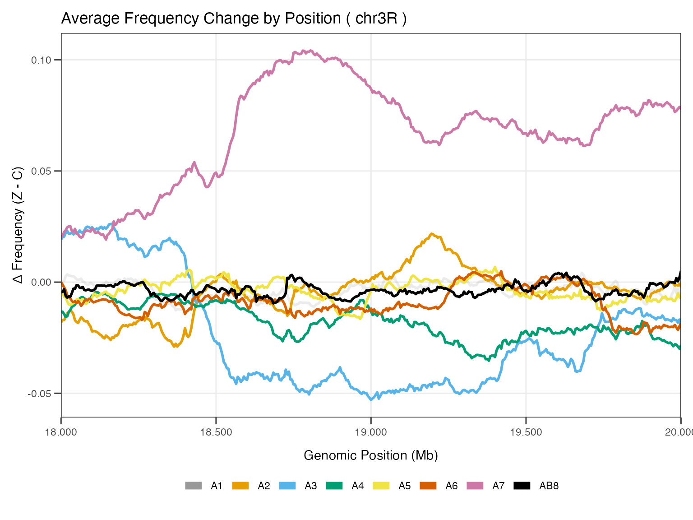
# Frequency changes by replicate
XQTL_change_byRep(zinc_hanson_means, "chr3R", 18000000, 20000000)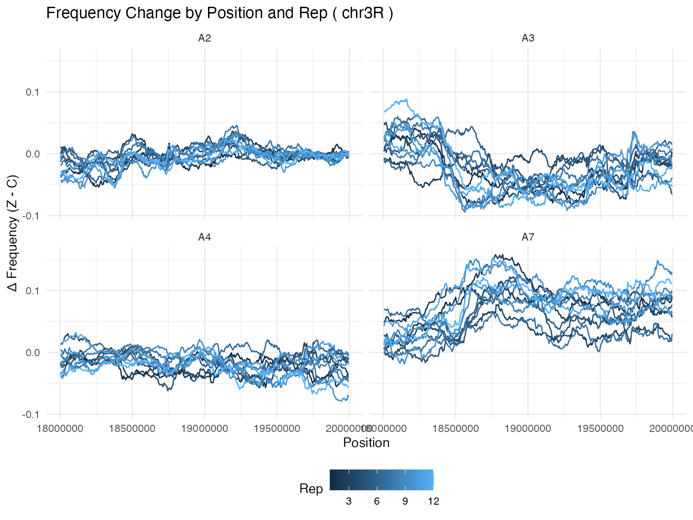
Step 3: Peak Refinement with XQTL_zoom
The XQTL_zoom function is an extremely productive tool
for refining peak boundaries. It finds the maximum association score in
a region and defines interval boundaries based on specified drops in
significance:
# Find and refine peak boundaries
# Arguments: data, chromosome, start, stop, left_drop, right_drop
out <- XQTL_zoom(zinc_hanson_pseudoscan, "chr3R", 18000000, 20000000, 3, 3)
# View the refined peak
out$plot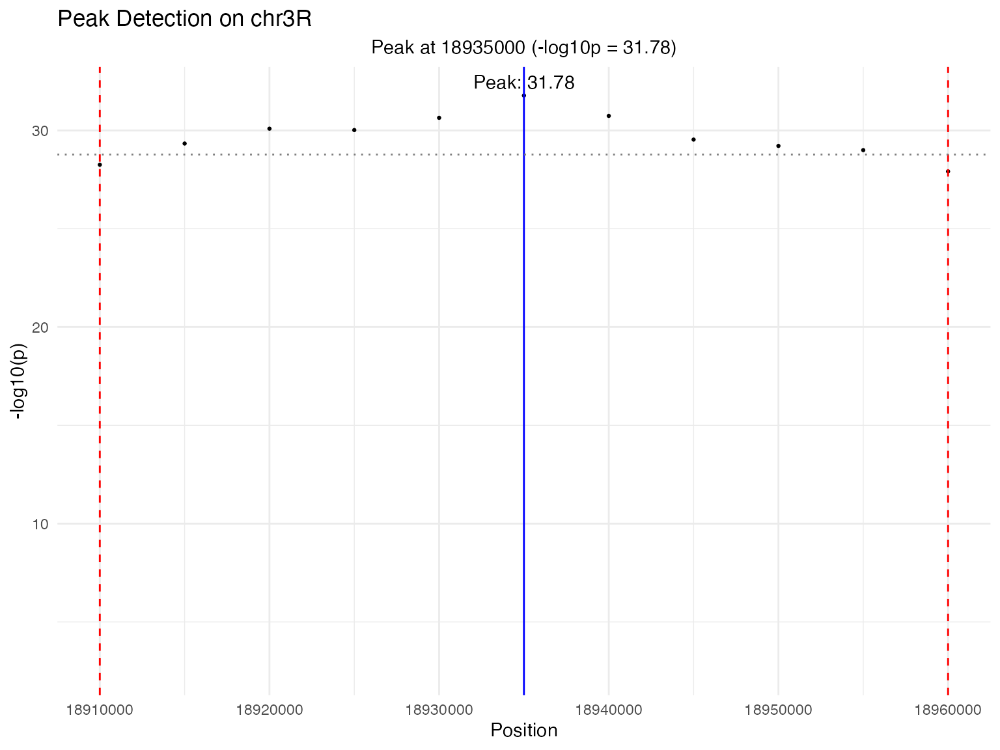
# Display the new interval boundaries
cat("Refined interval:", out$chr, ":", out$start, "-", out$stop, "\n")
#> Refined interval: chr3R : 18910000 - 18960000Tip: Adjust the left and right drop parameters until you’re satisfied with the peak boundaries. Smaller drops create narrower intervals, larger drops create broader intervals.
Step 4: Detailed Regional Analysis
With refined peak boundaries, create detailed visualizations of the region:
# Create individual plots for the refined region
A1 <- XQTL_region(zinc_hanson_pseudoscan, out$chr, out$start, out$stop, "Wald_log10p")
A2 <- XQTL_change_average(zinc_hanson_means, out$chr, out$start, out$stop)
A2b <- XQTL_change_average(zinc_hanson_means, out$chr, out$start, out$stop, plotSelection = TRUE)
A3 <- XQTL_genes(dm6.ncbiRefSeq.genes, out$chr, out$start, out$stop)
#> Warning: Using `size` aesthetic for lines was deprecated in ggplot2 3.4.0.
#> ℹ Please use `linewidth` instead.
#> ℹ The deprecated feature was likely used in the XQTL2.Xplore package.
#> Please report the issue to the authors.
#> This warning is displayed once per session.
#> Call `lifecycle::last_lifecycle_warnings()` to see where this warning was
#> generated.
A4 <- XQTL_variantsByFounder(dm6.variants, out$chr, out$start, out$stop, zinc_hanson_means)
A5 <- XQTL_SVBySize(dm6.variants, out$chr, out$start, out$stop, zinc_hanson_means)
# Combine plots using patchwork
library(patchwork)
A1 / A3 / A2
#> Warning: Removed 4 rows containing missing values or values outside the scale range
#> (`geom_segment()`).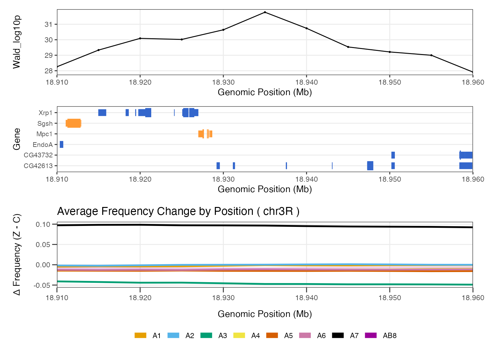
A4 / A5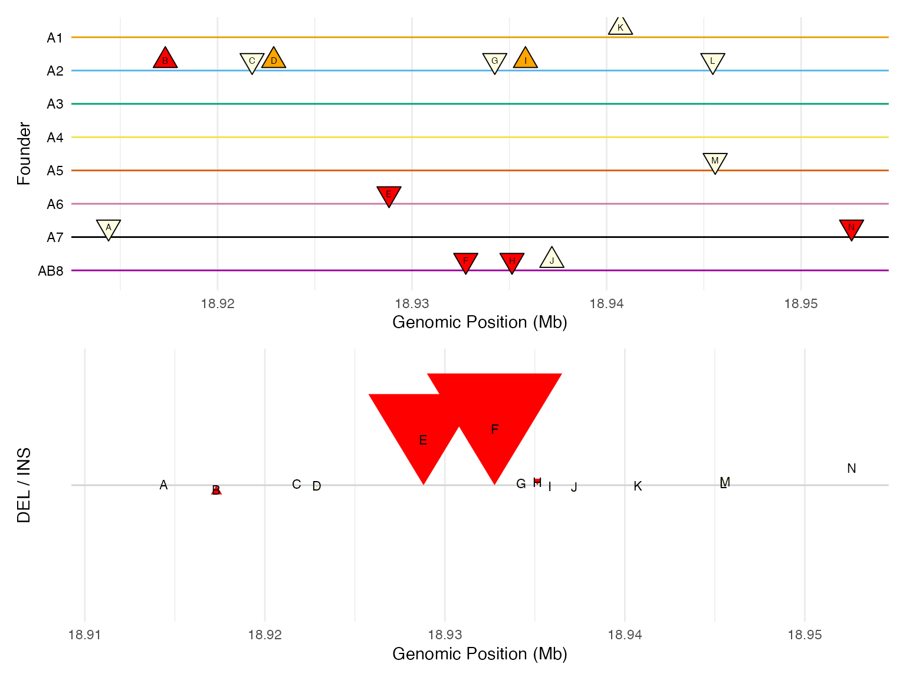
Step 5: Publication-ready Multi-panel Plot
For publication, create a comprehensive 5-panel plot that combines all analyses:
# Create publication-ready 5-panel plot
XQTL_5panel_plot(zinc_hanson_pseudoscan, zinc_hanson_means,
dm6.variants, dm6.ncbiRefSeq.genes,
out$chr, out$start, out$stop)
#> Scale for x is already present.
#> Adding another scale for x, which will replace the existing scale.
#> Scale for x is already present.
#> Adding another scale for x, which will replace the existing scale.
#> Scale for x is already present.
#> Adding another scale for x, which will replace the existing scale.
#> Scale for x is already present.
#> Adding another scale for x, which will replace the existing scale.
#> Warning: Removed 4 rows containing missing values or values outside the scale range
#> (`geom_segment()`).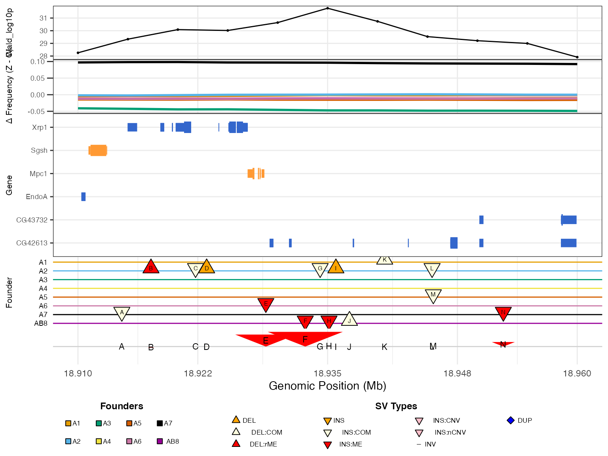
Step 6: Exploring Additional Peaks
Let’s examine another region to demonstrate the workflow:
# Explore a peak on chromosome 2L
out2 <- XQTL_zoom(zinc_hanson_pseudoscan, "chr2L", 6000000, 7500000, 2, 2)
out2$plot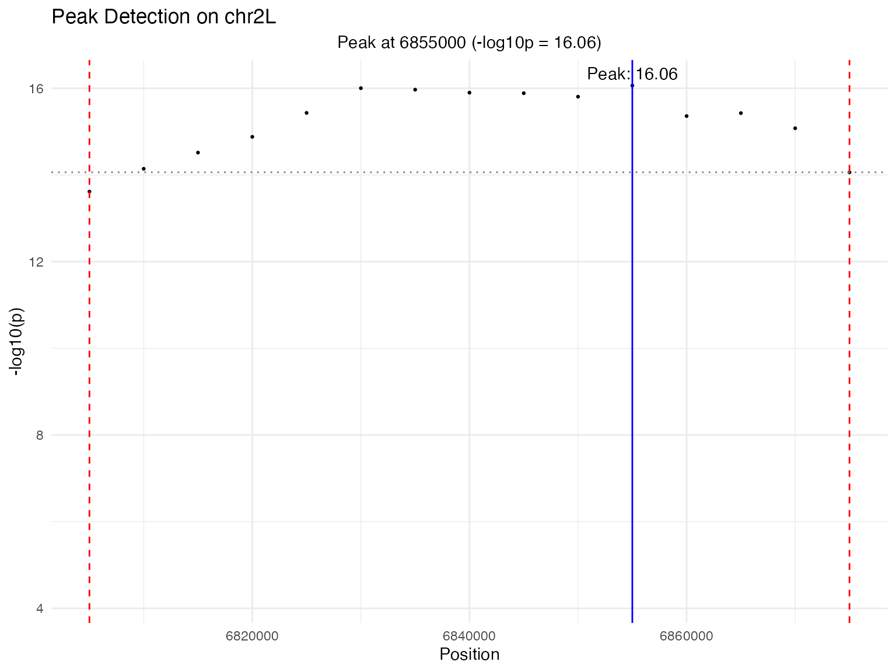
# Create multi-panel plot for this region
myplot <- XQTL_5panel_plot(zinc_hanson_pseudoscan, zinc_hanson_means,
dm6.variants, dm6.ncbiRefSeq.genes,
out2$chr, out2$start, out2$stop)
#> Scale for x is already present.
#> Adding another scale for x, which will replace the existing scale.
#> Scale for x is already present.
#> Adding another scale for x, which will replace the existing scale.
#> Scale for x is already present.
#> Adding another scale for x, which will replace the existing scale.
#> Scale for x is already present.
#> Adding another scale for x, which will replace the existing scale.
# Save the plot (uncomment to save)
# png("combined_plot_test.png", height = 10, width = 7, units = "in", res = 300)
# print(myplot)
# dev.off()Key Workflow Insights
- Start with 5-panel Manhattan plots for precise peak localization
- Use genetic distance (cM) to identify broad, potentially non-actionable peaks
- XQTL_zoom is your friend - it’s often the most productive starting point for detailed analysis
- Examine frequency changes to understand the biological relevance of peaks
- Look at genes and variants in refined intervals to identify candidate causal variants
- Use the 5-panel plot for publication-ready figures
Data Requirements
Your data should follow these formats:
-
QTL scan data: Columns
chr,pos,Wald_log10p, and optionallycM -
Frequency data: Columns
chr,pos,TRT,REP,founder,freq -
Gene data: Columns
chr,start,end,gene_name,strand,is_utr -
Variant data: Columns
CHROM,POS,type,subtype, and genotype columns for each founder
This workflow provides a comprehensive approach to XQTL analysis, from initial exploration to detailed candidate variant identification.